Instructions app.mtnath.com
2026-11-07 · Kilian Jornet
Principles
Your data is yours. You own all of it, decide who sees what, and can take it out at any time.
Physiology is complex, so look at it from many sides. Training stimuli, lifestyle, environmental stimuli, nutrition, hydration, cognition, technique, etc are interconnected. A single point of view cannot give the full picture. Lactate, heart rate, muscle oxygen, sleep, HRV, food, blood tests and injuries make sense next to each other.
The mountains change, and so do we. Knowing how keeps us safe. Conditions, avalanche terrain, weather and daylight change outside; fatigue, injuries and form change inside.
Every athlete is unique. We differ in our capacities, in how we adapt to each stimulus and in how we react to situations. Training should not follow averages or medians but your own.
Every number shows where it comes from. The app explains its calculations instead of hiding them: estimates are marked est. The tools inform you; you and your coach decide.
Learn from your own history. Injuries, close calls, blood tests and past seasons are a record to look back on, not just a log to fill. Patterns show over years, not weeks.
1. Getting started
app.mtnath.com is one web app for mountain athletes: plan races and routes, run lab tests, record sessions, and log and plan training, all with one account. It works in any browser on a computer or a phone, and everything you save is stored in your account, so it is the same on every device.
Signing in
Go to app.mtnath.com and type your email address.
Tap Email me a sign-in link and open the link in the email. No password is needed.
Install it on your phone as an app
There is nothing to download from an app store: you add app.mtnath.com to your home screen and it opens full screen like any other app, with its own icon. Sign in first in the browser, then:
| Phone | Steps |
|---|---|
| iPhone (Safari) | 1. Open app.mtnath.com in Safari. 2. Tap the Share button (square with an arrow, bottom bar). 3. Scroll down and tap Add to Home Screen. 4. Keep the name MTNATH and tap Add. |
| Android (Chrome) | 1. Open app.mtnath.com in Chrome. 2. Tap the ⋮ menu (top right). 3. Tap Install app (or Add to Home screen). 4. Confirm with Install. |
Open it from the new MTNATH icon from then on. On iPhone the home-screen app is kept separate from Safari, so you may need to sign in once more inside it (open the email link, then go back to the app); after that it stays signed in.
Updates arrive by themselves: there is nothing to update.
On iPhone it must be added from Safari (other browsers can't add it). To remove it, press and hold the icon and choose Remove App.
The Recorder needs Bluetooth from the browser, which only Android (Chrome) offers; on iPhone the rest of the app works normally.
Moving around the app
| Computer | Phone | |
|---|---|---|
| Main menu | Top bar: Races · Routes · Lab · Training · Admin · Account | Bottom bar with the same icons |
| Long screens | Side-by-side panels | Steps, tabs or panels you open one at a time |
| Graphs and maps | Hover with the mouse to read values | Touch; to zoom a graph, hold, then drag |
Only the tools you switch on in Account → My tools appear in the menu, and you choose which one the app opens on (section 10).
Visualizer has no menu entry: open it from an activity in Training. Recorder and Compare open from Lab.
Most lists and screens have a ⋯ menu with the less common actions (export, share, delete).
The tools at a glance
| Tool | What it is for | Where to find it |
|---|---|---|
| Races | Race plan: pacing, aid stations, weather, fuelling, GI risk, packing | Races |
| Routes | Draw and time mountain routes, check conditions, take the map offline | Routes |
| Lab | My profile and goals; metabolic and GAP tests: zones, VT1/VT2, your own GAP curve; blood tests, injuries and close calls | Lab |
| Recorder | Record and visualize live Bluetooth sensors | Lab → New FREE test |
| Compare | Overlay up to 4 activities | Lab → Compare activities |
| Training log | Daily sleep, training, food and health data, with summaries | Training → LOG |
| Training plan | Season, periods, weekly goals and planned sessions | Training → PLAN |
| Visualizer | Merge and read .fit / .csv files from all your devices | Training → an activity's link |
| Account | Profile, tool choice, wearables connections | Account |
2. Races — race planner
Races turns a GPX, a target time and your physiology into a full race plan: pace and arrival time at every aid station, weather along the course, energy burned, a gut-safe nutrition plan, caffeine timing, what to carry and how you will finish. A plan is built in 10 steps; on a computer they run down the left side, on a phone they are tabs across the top. Save (top right) stores the race; ← goes back to your list.
My races
+ Add a new race starts a plan. Your races are listed newest first with their date and last edit.
Shared lists races other people have shared with you.
Races will appear in the Training Plan calendar.
In a race, the ⋯ menu has Export to PDF, Export to CSV, Export GPX for watch (track + intakes) (see below), Create share link (a read-only view for a coach, no login needed) and Delete race.
The 10 steps
| Step | What you do there | What you get |
|---|---|---|
| 1 Race | Load the GPX; set start date, start time and target moving time; set fatigue (% slower by the finish); add aid stations by name and km (optional manual ETA). Tap Process route & fetch weather. | GAP pace with and without fatigue, grade-adjusted distance, real average pace, weather, aid-station timetable (ETA, elapsed, split) |
| 2 Physiology | Weight, body fat, sex, muscle glycogen, pre-race meals, pack mass, fastest descent pace, gut capacity, core temperature, VT1/VT2, SpO₂ at 1000–4000 m, zones (HR, GAP pace, kcal/h, CHO/fat), GAP formula, sweat rate by temperature, sweat sodium, accepted weight loss | Glycogen stores, energy cost at the finish, fluid target |
| 3 Profile | Toggle Day/night, Weather, Gradient, Aid stations; Full screen | Elevation profile coloured by gradient with sunrise/sunset, forecast and temperature |
| 4 Caffeine | + Caffeine dose: place it by km or by time of day, with mg | Active window and segment of each dose |
| 5 GI profile | Set min climb/descent and max section length to set the calculation of maximum carbs tolerated per section | Course split into climbs/descents; each section green/orange/red for gut load, for the Safe (85%) and Aggressive (100%) plan |
| 6 Nutrition | Pick the products in your pack | Intake sized to the CHO you burn, capped by gut capacity, placed at the lowest-risk moment (before descents, low on climbs) |
| 7 Aid stations | Per segment: Add GI proposal, then adjust products and flasks | Target carbs, fluid and sodium per segment vs. what you plan |
| 8 Packing | — | Count of every product and flask to carry |
| 9 Totals | — | Carbs, fluid, sodium, calories vs. burned; glycogen left; body estimate at the finish (weight, water and fat loss) Estimated time spend in uphill, flat and downhill. |
| 10 Products | + Custom food, + Custom drink, edit values, Reset to defaults | Your product library (brands preloaded) |
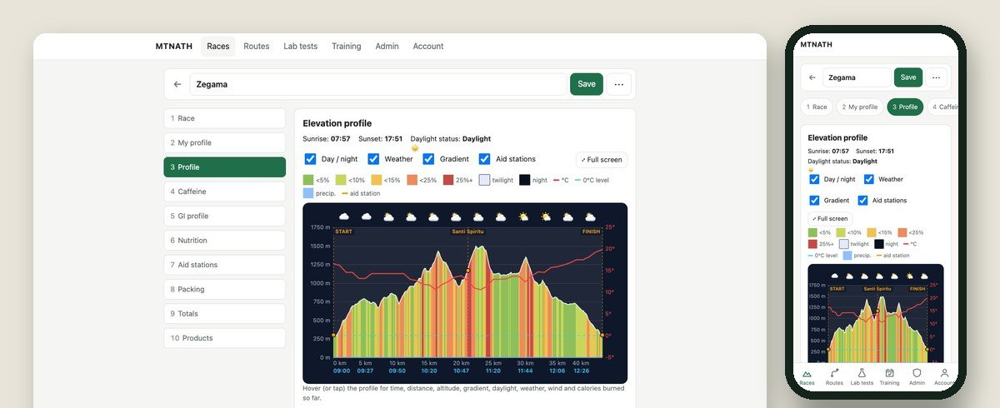
How to…
Use your own lab data. In step 2, tap Import zones from last test to fill zones and VT1/VT2 from your latest Test 1/1b, and Use my own GAP to switch from the general (Strava/Schroeder) formula to the curve from your Test 2.
Get the weather. Forecasts reach about 16 days ahead. Before that, enter the temperature at the highest and lowest point and the plan follows altitude; once the forecast exists it replaces them.
Keep settings for future races. Your profile and product library can be saved as your default so new races start with them.
Plan the gut first. Set the trained gut capacity honestly (g CHO/h): it caps every intake, and the GI profile shows where you would be at risk if you ate everything you burn.
Export GPX for watch
⋯ → Export GPX for watch (track + intakes), next to Export to PDF / CSV, saves the race as a GPX file with your fuel plan on it. Load it on your watch as a course: during the race the watch shows each intake and aid station when you reach it. The button is also on shared races and through the coach link.
| In the file | What the watch shows |
|---|---|
| Track | The race's imported route, with elevation. |
| Intakes (one waypoint per intake of the nutrition plan) | Placed at its km, with its planned pass time. The name starts with the numbers, because watches cut long names: e.g. 40g 140/280ml Gel = 40 g carbs, 140 ml water before and 280 ml after, a gel. Without Take water & osmolality into account, the water is the amount to drink until the next intake. The details hold clock time, elapsed time, km, section, carbs / fat / water and how to take it. |
| Aid stations (not the start or finish) | The station's name; ETA, elapsed time and km; and what to pick up there for the next segment. |
All waypoints are in km order. The file is named after the race (e.g. utmb-2026.gpx), or Trail_Race_Plan.gpx if the race has no name.
Tip: how much of the name and details you see depends on the watch. Most show the waypoint name as an alert when you reach it; open the course on the watch before the start to check.
How the race planner calculates
The plan is built in four layers: pace on every meter of the course, energy burned at that pace, % of carbs and fat and how much carbohydrate your gut can absorb there, and when to eat so you never exceed it.
1. Pace and the fatigue slider. The target moving time is turned into a flat-equivalent pace (GAP). On each stretch, time = distance × the GAP factor for its gradient ÷ GAP speed. The factor comes from the general formula (Strava/Schroeder: ×1.18 at 5%, ×1.46 at 10%, ×1.85 at 15%, ×2.30 at 20%, ×3.16 at 30%) or, with Use my own GAP, from your Test 2 (fitted on 0–20%; downhill keeps the general curve, above 20% the general curve is scaled to your 20% value). Descents are capped by your fastest descent pace.
The fatigue slider makes the GAP pace slow down in a straight line from start to finish while keeping the same target time. At 5% you start faster than the no-fatigue pace and finish 5% slower than you started (Example: 3:28 → 3:39 /km instead of 3:45 all the way). The number in brackets is how much slower the second half is than the first on average, so if you know how much you slow down per half's, you can see it there.
2. Energy burned. Every minute, your GAP pace is placed between the GAP paces of your 5 zones and the kcal/h and CHO/fat split are interpolated. Then:
kcal = zone\ kcal/h \times temperature\ multiplier \times (1 + drift \times km) \times \frac{body + pack}{body}Temperature multiplier: 1.0 between 5 and 15 °C, +1% per °C above 15 °C, +1.5% per °C below 5 °C. Air temperature comes from the forecast at each point, or from your high/low-point values following altitude.
The CHO share also moves with temperature: +1 point per °C above 15 °C, +0.5 point per °C below 5 °C.
Drift (energy cost per km, typically 0.15–0.25%) adds the cost of muscle damage over the distance.
CHO burned is drawn from glycogen: muscle stores (weight, lean mass and level 18/20/24 g/kg) plus liver (set by pre-race meals). Totals and the glycogen chart show what is left.
3. Gut capacity (the GI model). Your trained gut capacity (g CHO/h, rested and cool) is reduced section by section by four factors, multiplied together:
| Factor | What lowers it | Formula |
|---|---|---|
| Intensity | Effort above VT1. Effort is placed between your VT1 and VT2 GAP paces. | 1 − 0.7 × ((effort − VT1) ÷ (1 − VT1))^1.8, min 0.1 |
| Heat | Core temperature above your race core temp, +0.05 °C per °C of air above 20 °C if ticked | 1 − 0.35 × (core − 38)^1.4, min 0.1 |
| Altitude | SpO₂ below 98% (your values at 1000–4000 m, at each section's highest point) | 1 − 0.015 × (98 − SpO₂), min 0.2 |
| Impact | Running downhill: steeper and faster = more jolting | 1 − 0.25 × impact (impact = speed × gradient² ÷ 0.16, 0–1; zero on climbs) |
Gut load = intake ÷ capacity, measured over 30 minutes: green below 0.85, orange 0.85–1.0, red above 1.0 (carbohydrate piling up in the gut: nausea, diarrhoea). The strip under the GI profile shows the load if you ate everything you burn; it is information, not the plan.
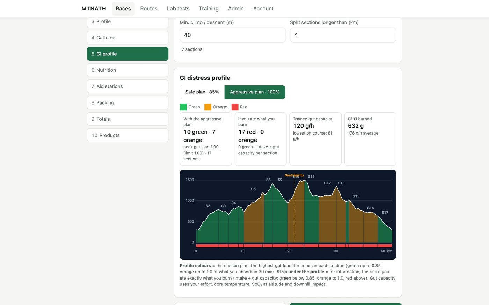
4. Safe vs aggressive plan. Both follow the CHO you burn, up to your trained capacity. The Safe plan never lets the gut load pass 0.85 of what you can absorb in 30 minutes; the Aggressive plan allows up to 1.0. Aggressive gets more carbs in (less glycogen used) but sections sit in orange; Safe leaves a bigger shortfall that is "owed" and eaten later when the gut can take it.
How intakes are placed. Each intake = what you burned and haven't eaten yet + what you will burn in the next 60 minutes, capped by gut capacity. It goes at the lowest-risk moment in the next 30 minutes: before descents, at the bottom of them, low on climbs, once cooled. Defaults: first intake after the start delay you choose, at least 15 minutes between intakes, a gel only when the owed carbs reach about 80% of a gel. Gels under 40 g count in full at once; gels of 40 g or more are counted as sipped over about 5 minutes with 150–250 ml of water. Fat suggestions (nuts, cheese, peanut butter) come from the fat strategy (part 6 below), which picks the segments where fat makes sense.
5. Water & osmolality check (optional). By default the GI model counts only grams of carbohydrate. Tick Take water & osmolality into account on step 5 (GI profile), next to the Safe / Aggressive choice, and the planner also follows what is in your stomach: water, carbohydrate and dissolved particles (osmoles). The choice is saved with each race; unticked, the plan is exactly as before.
Target and limit, per race. When the box is ticked, two fields appear under it:
| Field | Default | Allowed | What it does |
|---|---|---|---|
| Target osmolality (mOsm/kg) | 300 | 250–600 | The concentration the water advice aims for in the stomach after each intake |
| Limit (mOsm/kg) | 600 | 300–1000, above the target | The stomach osmolality an intake may never push you over |
A value outside those ranges, or a limit not above the target, shows a message and the plan keeps the last valid value. Both are saved with the race (only when they differ from the defaults), appear in the PDF header and CSV note, show in shared races, and can be edited through the coach link.
What it takes into account:
| Input | Where it comes from |
|---|---|
| Water you drink | Your hydration plan (sweat rate by temperature), as sips about every 10 minutes |
| Water inside the food | Each product's water (e.g. Maurten Gel 160 ≈ 24.5 g); a drink counts its mixed volume |
| Osmoles of the food | The product's typed osmolality, or its carb split: glucose and fructose 5.6 mOsm/g, sucrose 2.9, maltodextrin about 0.8; sodium 0.087 mOsm per mg |
| Sodium and carbs in what you drink | The drinks planned for that segment; otherwise your sweat sodium target; plain water = 0 |
| Gastric emptying | Water leaves the stomach with a half-time of about 12 min, slower when the stomach is concentrated (half speed at about 900 mOsm/kg), and slowed by the same four factors as absorption: effort above VT1, core temperature, SpO₂ at altitude and downhill impact |
From this it checks three limits at every minute, and a section's colour shows the worst of them:
Gut load (as before): 0.85 for the Safe plan, 1.0 for Aggressive.
Stomach osmolality, averaged over 10 minutes (so a gel isn't flagged before its water has mixed in): must stay at or under the race's Limit (default 600 mOsm/kg). It is checked until the food is fully in the stomach and its 10-minute average has caught up, so slow foods count too (a sandwich is released over 25 minutes). Safe / Aggressive no longer changes this limit; it only sets the gut-load limit above.
Stomach volume: 700 ml on flat ground, less on descents (up to 40% less at full impact), because a full stomach tolerates bouncing badly.
For each intake the planner works in this order: (1) add water to bring it towards the target, capped first by the stomach volume and then by what the hydration plan can give nearby (taken from it, not on top of it); (2) if the intake would still end above the limit, move it with its water to a better minute in the next 30 minutes, split it (sip it more slowly) or use a smaller product; (3) as a last resort, skip it (the carbs stay owed). Each intake shows the value it reaches and why, e.g. "≈ 385 mOsm/kg with 525 ml (target 300: the stomach can't hold more)".
Water before and after each intake. The nutrition plan shows how much water to drink with each intake, aiming for the race's target osmolality (default 300 mOsm/kg): up to a third (max 150 ml) in the 5 minutes before, the rest within 10 minutes after. Examples with a Gel 160 and target 300:
| Where | Water to reach the target | Water given | Stomach ends at |
|---|---|---|---|
| Flat ground | 731 ml | 525 ml (stomach volume is the cap) | ≈ 388 mOsm/kg |
| Descent | — | 357 ml (less room when bouncing) | ≈ 510 mOsm/kg, under the 600 limit |
The target is often not reached because the stomach can't hold that much water; what matters is staying under the limit. A salty drink dilutes less than plain water, so it needs more; a drink stronger than the target can't dilute a gel, so the plan advises plain water with it. The water is moved from nearby sips of your hydration plan, so your hourly total stays the same (no over-drinking).
While ticked, the GI profile also shows each section's peak stomach osmolality and volume, and a comparison line sums up what changed against the unticked plan (e.g. "3 intakes moved, 1 capped (−25 g CHO), +180 ml water near gels, peak stomach 520 mOsm/kg"); tap it to see each changed intake.
Product data. In step 10 (Products), each product can carry its serving weight, water, carb split (glucose, fructose, sucrose, maltodextrin), osmolality and a hydrogel flag. Fructose % is calculated from the split when you type one. Missing values are estimated by type (e.g. a gel's water from its weight minus carbs and fat) and marked est.; the GI page lists estimated products so you can fill them in. These values only change the plan when the box is ticked.
6. Fat strategy. The planner suggests fat where it makes sense: to fill part of the energy gap when carbs are already at the gut limit, to protect body fat in long races, and at low intensity, where it is easier to eat. It gives advice per segment.
When a segment qualifies. All four conditions must hold:
| Condition | Default |
|---|---|
| Average GAP pace at or slower than a zone's GAP pace | Z2 |
| Segment starts at least this long after the start | 5 h |
| CHO burned at least this much (carbs at the limit) or energy gap (kcal burned − kcal planned, per hour) at least this much | 100 g/h or 150 kcal/h |
| In the minutes after the segment, less than 10 min faster than Z3 pace (no hard effort while it digests) | 75 min |
How much. Half the energy gap, as fat: ½ × gap ÷ 9 kcal/g, up to the maximum (default 15 g/h), minus any fat already planned there, rounded. Under 3 g/h nothing is shown. If the finish estimate still shows body fat below the safe floor (3.5% men, 12% women), the missing fat is spread over the qualifying segments by their hours, up to the maximum per hour; what doesn't fit is shown as a remainder.
Settings. In the race's Physiology settings and in Lab → My profile → Gut & fuelling: Suggest fat on suitable segments (on by default), Only at or slower than (zone), From elapsed time (h), Carbs at the limit from (g CHO/h burned), Or an energy gap of (kcal/h), Most fat (g/h) and No hard effort for (min after). Each value is checked when you leave the field.
Where it shows.
Aid stations (step 7): under a qualifying segment's totals, a line such as "🥜 Good section for fat: ~5 g/h (≈ 7 g) — Z1–Z2 · 6.2 h in · energy gap 205 kcal/h"; hold or hover over it to see every reason. Tap it to add the fat: peanut butter if it is in your library, otherwise nuts, cheese or a sandwich, otherwise the food with the most fat (at least 5 g), in the quantity needed to reach the grams. Segments that don't qualify show nothing.
Totals (step 9): "suggested fat X g · planned Y g".
Body estimate at the finish: the fat-loss box keeps its warning and adds where fat was suggested, e.g. "Suggested in: km 40 → km 60 (71 g)", plus any remainder.
3. Routes — route planner
Routes lets you draw a mountain route on a topo map, time it from your GAP pace, see weather, daylight and avalanche and conditions information along it, and save it or take it offline. The map fills the screen; tools sit on the map, and a panel on the right (Route, Plan, Marks, Area) plus the elevation profile at the bottom hold the details.
Map toolbar
| Button | What it does |
|---|---|
| ✏️ Draw | Tap the map to add route points |
| 📍 Mark | Tap the map or the profile to drop a mark (water, refuel, shelter, danger…) |
| ✋ | Move the map only (no drawing) |
| 🥾 Follow trails | Snap between points along paths, or straight lines point to point |
| Routing menu | Mountain trails · Trails + tracks · Shortest path |
| ↶ ↷ | Undo / redo (Ctrl+Z on a computer) |
| ⇄ | Reverse direction |
| ↩︎ | Out and back (adds the way back) |
| ⟲ | Close the loop |
| 🗑 | Clear route and marks |
| ◎ | Go to my location, Compass marks phone direction |
| ⤢ | Zoom to the route |
| ⦿ Edit points | Show route points so you can drag or delete them |
| ⛶ | Full screen |
| Layers | Choose the base map and overlays (see Map layers below) |
In the Phone you can see your live location and a cone with the orientation of the phone compared to the map for easier navigation.
Map layers
Tap the Layers button (stacked squares, top right of the map) to choose one base map and any number of overlays.
| Base map | Best for |
|---|---|
| OpenStreetMap | General cartographic map: roads, towns, paths |
| OpenTopoMap | Topographic map with contour lines and hill shading, worldwide |
| CyclOSM (trails) | Paths and tracks highlighted, good for picking trails |
| Topo (Esri) | Topographic map from Esri, worldwide |
| Satellite (Esri) | Aerial imagery: glaciers, forest, rock and snow cover |
| Norway topo (Kartverket) | Official Norwegian topographic map |
| Switzerland (swisstopo) | Official Swiss topographic map |
| France (IGN) | Official French topographic map |
| Spain (IGN) | Official Spanish topographic map |
| Overlay | What it shows |
|---|---|
| Hiking trails (Waymarked) | Marked hiking routes drawn over any base map |
| Slope (avalanche classes) | Terrain steepness coloured by avalanche class: 27–30°, 30–35°, 35–40°, 40–45°, 45–60°, 60°+ |
| Marks | Your marks along the route (water, refuel, shelter, danger…) |
| Webcams | Webcams within 15 km of the route |
Planning in avalanche terrain. Switch on Slope (avalanche classes) to see where the route crosses or passes under slopes of 30° and more, the steepness where most avalanches start, and check the Area tab for the avalanche bulletin. The slope layer comes from elevation data at about 30 m resolution, so small steep spots are smoothed out: use it for planning, not for avalanche decisions on the spot.
Draw a route
Choose Draw and a routing mode (Mountain trails for footpaths).
Tap the start, then each turning point; the line follows trails between taps.
Fix mistakes with undo, or Edit points to move or delete a point.
Use Out and back or Close the loop to finish the shape. You can also drop a GPX file on the map instead of drawing.
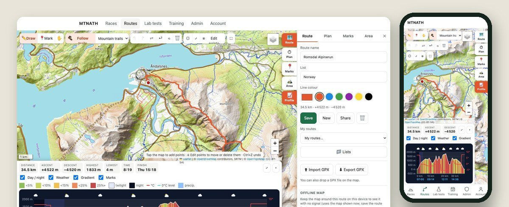
The side panel
Route — name, list, line colour; Save, New, Share, delete; My routes to reopen a saved route; Lists to group routes; Import GPX / Export GPX; Save map offline keeps the map around a saved route on this device for use without signal.
Plan — pace by GAP pace (min/km on flat) or by Total time; start date and time; fatigue (% slower per 10 h); default stop at refuel marks; physiological data for calories. Shows total time, finish clock time, average pace, vertical speed on climbs, sunrise/sunset, the stretches in the dark and the forecast (when the start is within 16 days).
Marks — every mark along the route: 💧 Water · 🍌 Refuel/aid · 🏠 Shelter/hut · ⚠️ Danger · ❄️ Conditions · 📍 Info. Drag a mark to move it.
Area — for the route's highest point: the avalanche bulletin (Varsom in Norway, EAWS links elsewhere), weather links (Yr, Windy, Meteoblue), conditions (regObs, xgeo snow maps, Skisporet, Camptocamp, Sentinel satellite, Strava heatmap) and a webcam map.
Elevation profile
The bar under the map shows distance, ascent, descent, highest and lowest point, total time and finish time. Toggle Day / night, Weather, Gradient and Marks; the profile is coloured by gradient (<5% to 25%+) with clock times along the bottom. Hover or touch to read any point; Full screen enlarges it.
4. Lab
Lab holds what describes you as an athlete. Its tests turn treadmill test files into your personal zones, VT1/VT2 thresholds and your own grade-adjusted pace (GAP) curve, which Races then uses. Repeat the tests at the end of each training block to track change. The Lab page has My profile, Goals, Blood tests, Injuries and Risk and behavior analysis at the top, then your saved tests and five buttons: three test types, the Recorder (section 5) and Compare (section 6).
My profile
My profile holds your zones, thresholds, body numbers and training context in one place. Every new race plan starts from it, and the Training log uses its zones for time in zones. Open it from the top of Lab (My profile ›); the tabs at the top jump to each part. Tap Save at the bottom when you are done.
| Part | What you set | Used for |
|---|---|---|
| Body & zones | Weight, body fat, sex, level (muscle glycogen 18 / 20 / 24 g/kg); zones Z1–Z5 with HR, GAP pace, kcal/h and CHO/fat (as % of energy or g/h) | Glycogen stores; energy burned at every pace; time in zones in the Training log |
| Thresholds & GAP | VT1 and VT2 (GAP pace and % of max), fastest descent pace, GAP formula (general or your own) | Effort level in the GI model; descent speed cap; time on climbs |
| Gut & fuelling | Trained gut capacity (g CHO/h), core temperature in race (+0.05 °C per °C of air above 20 °C) | GI model and maximum intake of the nutrition plan |
| Hydration | Sweat rate (L/h) at 0, 10, 20, 30 and 40 °C; sweat sodium (low 500, normal 900, heavy 1500 mg/L or your own) | Fluid and sodium targets per segment |
| Altitude | SpO₂ while running at 1000, 2000, 3000 and 4000 m | Gut capacity at altitude |
| Training context | Training environments: where you train (terrain, altitude, climate, season, what you can reach from home). Tools for training: what you have access to (treadmill, gym, bike, sensors, altitude or heat set-ups…). Tools for recovery: what you use to recover (sauna, cold water, massage, compression, sleep aids…) | Planning that fits what you actually have, for you, your coach and Claude |
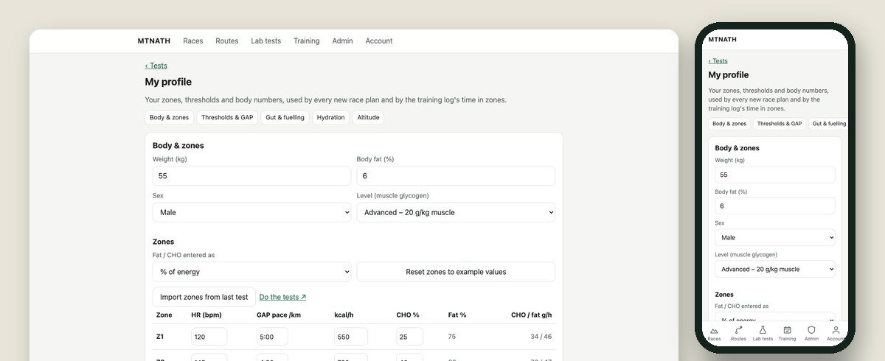
Fill it from your tests. In Body & zones, Import zones from last test takes the zones from your latest Test 1 / 1b (their GAP pace is the 10% treadmill speed made flat-equivalent). In Thresholds & GAP, Use my own GAP switches to the curve from your Test 2; Use general GAP formula switches back. Reset zones to example values starts over. No tests yet? Do the tests ↗ opens Lab.
Race-day values stay in each race. Pack mass, pre-race meals (liver glycogen at the start), energy cost drift, accepted weight loss, temperatures, caffeine and products are set in each race, not here. Each race keeps its own copy of the profile: saving My profile does not change races you already saved. To bring the new values into a race, open it and choose ⋯ → Refresh from my profile.
| Test | Protocol | Files you need | What it gives |
|---|---|---|---|
| Test 1 — Metabolic cost at 10% | Treadmill at 10% grade: rest, 4-min stages rising in speed until above VT2, then 1-min ramp steps; lactate at each stage | Metabolic cart export (.csv, required, keep the original filename) + Tymewear (.csv, strongly advised) + lactate and RPE typed in | Zones (HR, pace, kcal/h, CHO/fat), VT1/VT2, HR–VO2 line |
| Test 1b — Thresholds with Tymewear only | Same protocol as Test 1, between cart tests | Tymewear (.csv, required); choose a reference cart Test 1 | Thresholds; fuel mix and VO2 carried from the reference Test 1 |
| Test 2 — GAP calibration 0–20% | Stages at grades from 0 to 20% at a target HR (VT1 − 10 bpm) | Tymewear (.csv, required); choose a reference Test 1 | Your own GAP curve |
Do Test 1 first: Test 2 uses its VT1 heart rate and HR–VO2 line.
Run a test in the app
Tap New Test 1, New Test 1b or New Test 2.
Session details: test date and body mass before are required; add body mass after, lab conditions (room temperature, humidity, pressure, altitude, fan, treadmill checked, cart calibration, lactate control solution) and athlete state (dinner, hours fasted, CHO the day before, caffeine, water, hours since last hard session, sleep, morning HR and HRV, shoe model, cycle phase) plus notes.
Files: add the exports. The timeline appears once a file is loaded.
Protocol and stages: enter rest window, stage 1 start (m:ss from the start of the recording), start speed, increment, stage length and ramp settings, then Rebuild stage grid from these settings. Check the stage bands on the timeline and use Shift all stages (−10 s … +10 s) if a stage started late.
In the stage table, fill speed, grade, gait (stand / walk / run), lactate and RPE per stage.
Tap Analyse, review the results, then Save test.
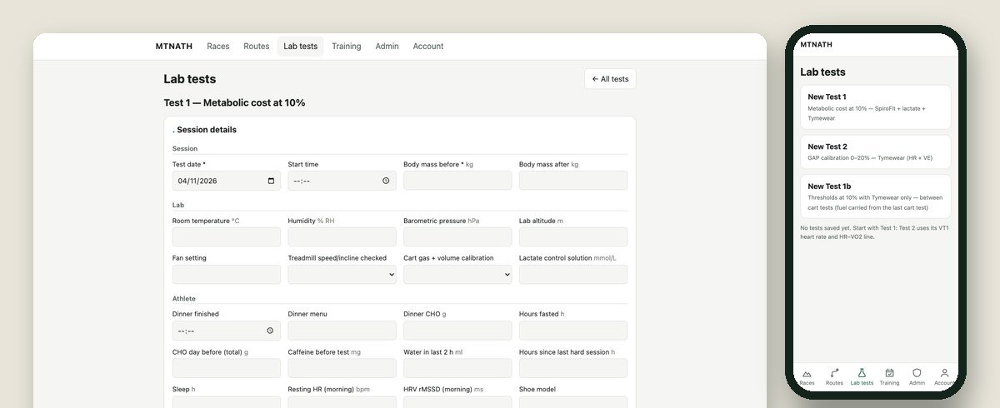
Tip: the Recorder (section 5) can run the Test 1/1b and Test 2 stage protocols live, with a beep at every step.
Goals
Lab → Goals keeps your goals and how committed you are to each one, so you can plan towards them and look back on them later. + New goal asks for:
Date and a precise description of the goal: the race or project, its profile, the environment (altitude, heat, terrain, season), nutrition and anything else that defines it. The more precise, the easier it is to plan for.
Assessment of commitment: three questions, each with your own words and a 1–10 scale:
Question Scale 1–10 Rewards: what you get if you succeed How likely you are to succeed (1 = very unlikely, 10 = almost certain) Consequences of not trying: what you lose if you don't go for it How much it means to you (1 = not much, 10 = everything) Consequences of failing: what happens if you try and fail How bad failing would be (1 = not bad at all, 10 = very bad) Result, once the date has passed: Succeeded or Failed, and why. Over the years this shows which goals you commit to and what makes them work.
Goals are read together with the season, the training plan and the training context in My profile, by you, your coach and Claude (section 10).
Blood tests
Lab → Blood tests keeps every blood test in one table: markers as rows, test dates as columns (newest on the right), so trends read left to right. Markers are grouped (Red cells & iron, White cells, Vitamins & minerals, Hormones, Muscle, inflammation, liver, kidney, Metabolic & lipids, and My markers for your own). A value outside the reference range is shaded and marked ↓ or ↑, and the last column draws a small trend line for each marker.
One test / Table: Table shows all tests side by side; One test shows one date (‹ › or the date list) with each marker, its value and reference range, and a summary line ("37 markers · 6 out of range"). On a phone One test opens first.
Search a marker, the group list and Only markers with values narrow the table.
+ Add test has three ways in: Type values (a form), Import CSV, or ✨ Read PDF / photo with Claude.
⋯ → Export CSV (the table) or Export CSV (one value per row).
Read a lab report with Claude. Upload the lab's PDF or photos of the paper report. Claude reads the date, lab, markers, values, units and reference ranges and fills a review step; nothing is saved until you check it and tap Save. Names and units from any lab are put on the app's own markers, so every test lines up in the same rows. Values read by Claude show AI until you edit them, and the test is labelled Read by Claude. The file is only used for the read and is kept only if you choose to keep the original.
Every blood test also shows as 🩸 on its day in Training → Log, so it can be read next to training, sleep and food. Both Claude reading and the 🩸 in the log can be switched off in Account (section 10).
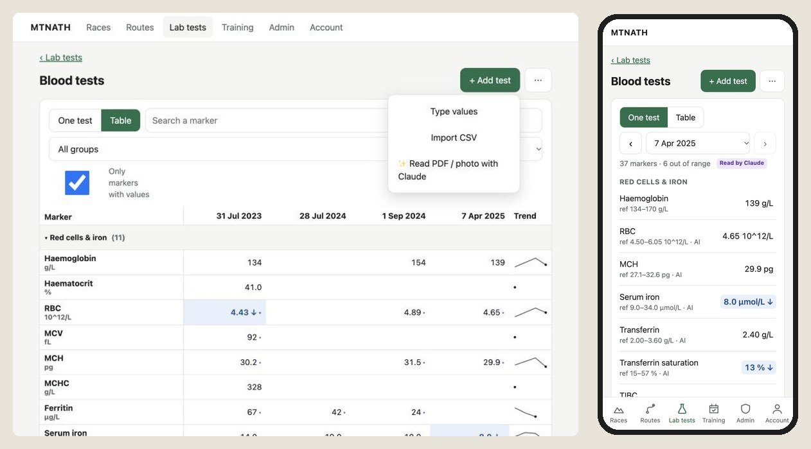
Injuries
Lab → Injuries (also All injuries and their history › from the 🩹 in the log) follows each injury from the first day until it is resolved.
At the top: injuries open now, this year and in all.
Today: choose the day, then for each open injury tap Pain today (0 = none, 10 = worst), how training went (As planned, Adjusted or Stopped) and the treatment (physio, ice, taping…). Resolved today closes it.
+ New injury: body part, name (e.g. Achilles, TFL, plantar fascia), side (Left, Right, Both), kind (muscle, tendon, joint / ligament, bone, skin, other), started, resolved (empty = still there), how it happened and a note.
Time line: one bar per injury across the years.
All injuries: a table with start, resolved, days, highest and last pain, days stopped and adjusted, and the number of check-ins.
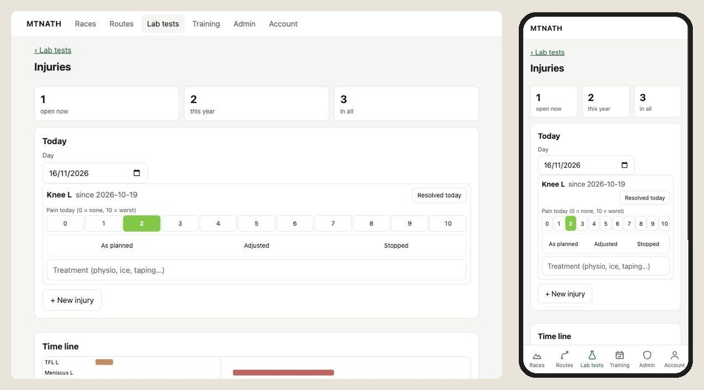
Risk and behavior analysis (close calls)
Lab → Risk and behavior analysis is a private record of close calls and dangerous situations in the mountains, so you can look back at what happened and what you learned. Tap + Add situation:
Date of the situation and Training card with CloseCall: link it to the session it happened in.
Type of situation: 1. Close call or 2. Dangerous situation.
Nature of the situation (one or several): Avalanche, Cornice, Fatigue, Weather, Landslide, Fall, Rockfall, Crevasse, Ice, Navigation, Equipment, Cold, Heat, Darkness, Other, or type your own and press Enter.
Description, Possible outcome, What could I have done and What I have learned.
The Close calls table lists them newest first, with ↗ to the linked training card. Give that session the CloseCall focus so it shows ⚠️ in the log (section 7).
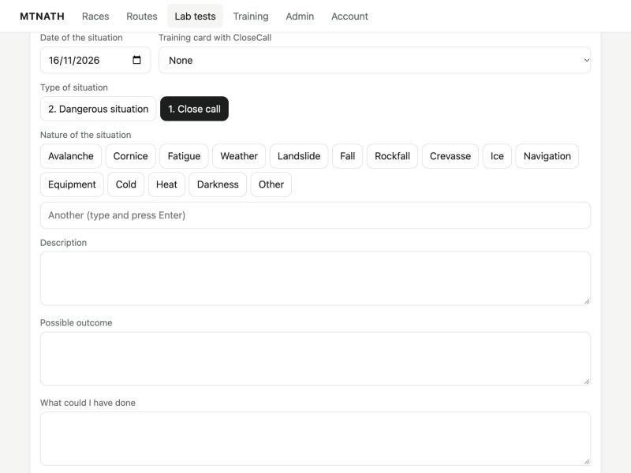
5. Recorder — lab and indoor sessions
The Recorder connects to Bluetooth sensors straight from the browser and records a lab or indoor session, a free session or guiding a step protocol with beeps while every signal shows live. Open it from Lab → Record Activity. It works in Chrome on a computer or an Android phone (iPhone browsers do not offer Bluetooth to web pages).
Sensors you can add
| Button | Examples |
|---|---|
| + Heart rate | Chest strap, armband |
| + Power | Stryd (running power), power meter |
| + Footpod | Stryd as footpod (speed, cadence) |
| + Treadmill | Smart treadmill (speed, incline) |
| + Home trainer | Smart bike trainer |
| + CORE | CORE body temperature (core, skin, heat strain) |
| + Ventilation (VO2 Master) | VE, breathing rate, tidal volume, VO2, VCO2 |
| + Thermometer | Room or skin temperature |
Demo sensors adds simulated sensors so you can try the Recorder without equipment.
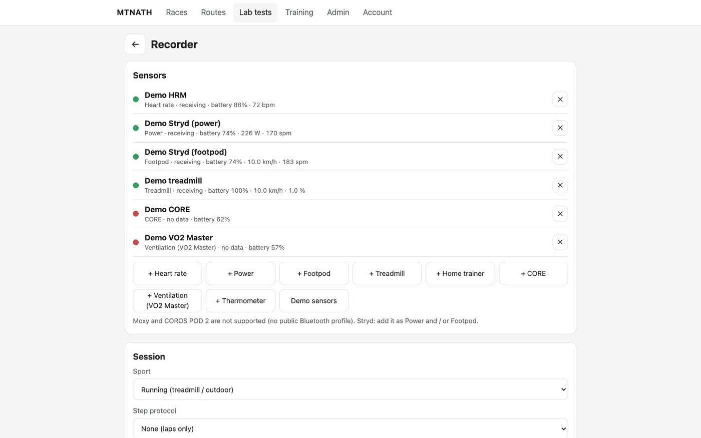
Record a session
Add each sensor and pick it in the browser's Bluetooth list. Each one shows its status, battery and live value; ✕ removes it.
Under Session, choose the sport (Running, Cycling, Other) and a Step protocol: None (laps only), Test 1/1b stages, Test 2 stages or My steps. For a protocol, set start speed, step increment, stages and ramp steps; the app shows the number of steps and total time.
Leave Start the protocol with the recording ticked to start both together, then tap Start recording.
During the session: big tiles show elapsed time, lap time, current step and countdown to the next, and every signal; a live graph runs underneath. Tap Lap to mark a lap. With a test protocol, open Test 1 / 1b: lactate, RPE, notes to type values at each step. End protocol stops the steps but keeps recording.
Tap Stop, then Tap again to stop to confirm.
Name the recording and tap Save: it is stored as a .fit file and a Training log card, whose link opens it in the Visualizer. Discard deletes it (it is only on this device until saved).
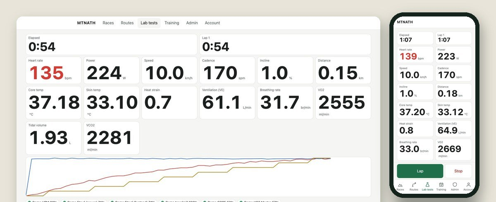
Adding DATA during a recording (lactate, RPE…)
You can add measurements while you record, without stopping: a lactate at the end of a step, an RPE, a weight before you start.
Tap + DATA during the recording (or on the finished screen, before Save).
Pick the type: Lactate, Weight, SpO2, Glucose, Ketones, RPE (0–10), Core temperature or Custom (your own label). The unit fills in; change it if needed.
Type the value and set the time: Now (the moment you tap) or a time from the start (h:mm:ss) for a reading taken earlier. Add a note if useful, then save the entry.
Each entry appears as a chip under the sensor strip; tap a chip to edit or delete it.
Entries are kept with the recording on the device, so if the app closes, Recover unsaved session brings them back too.
On Save, they are stored as DATA points of the new Training card. The card and the Visualizer then show them like any other DATA entry (see "Adding DATA points" in section 7), including lactate on the heart-rate graph. Saving again doesn't duplicate them.
6. Compare — activities on top of each other
Compare overlays up to 4 activities on the same graphs, one colour each, so you can see how the same climb, test or session changed over weeks. Open it from Lab → Compare activities.
Tap + Add from Visualizer and pick activities from the list (search by name or date, e.g. 2026-11-03, 3/11 or November), or Upload .fit / .csv to add a file that isn't in the app yet. The counter shows how many of 4 you have.
Each chosen activity appears with its colour, date and duration. Crop trims its start and end so the efforts line up; ↗ opens it in the Visualizer; × removes it.
Choose Time or Distance for the horizontal axis.
Under Graphs, switch signals on or off (up to 10): speed, heart rate, power, cadence, SmO2, altitude, Tymewear signals and more, per device.
Move over (or touch) the graphs to read every activity's value at the same moment; drag over a graph to zoom (on a phone: hold, then drag). The map below shows the routes.
Save keeps the comparison so you can reopen it.
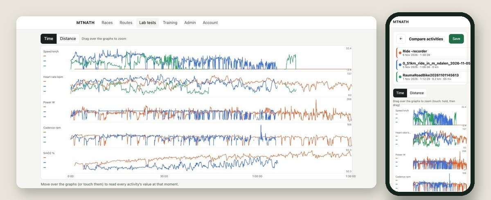
7. Training log
The Training log is your daily record: sleep, training, food and everything else (illness, injuries, heat and altitude, body data), shown as a calendar, a list or weekly summary charts. Open Training and make sure LOG is selected. Activities, sleep, weight from connected wearables arrive on their own once connected (section 10).
Views
Week / Month with ‹ Today › to move in time.
Calendar — coloured bars per entry on each day, with weekly totals (time, km, m+, sessions, kcal) at the end of each week. Tap an entry to open or edit it.
List — a spreadsheet-like table with all fields as columns (sleep, sickness, injuries, environment, training, food, poop/pee, data, other). Training rows have a link to the activity (wearable platform if synchronized or the Visualizer if .fit uploaded or recorded).
Summary — weekly charts over 8, 12, 26 or 52 weeks: training time by sport (run, bike, gym, hike, ski, climb, others) with running distance, elevation and average weight, plus rows for injury, sick days, altitude and heat days, sleep, muscle fatigue, energy, motivation, trust, resting HR and HRV.
Filters All · Sleep · Training · Food · Other (with counts), and a line of totals for the period.
Search: search and filter the whole log, all years (see Search and filter below).
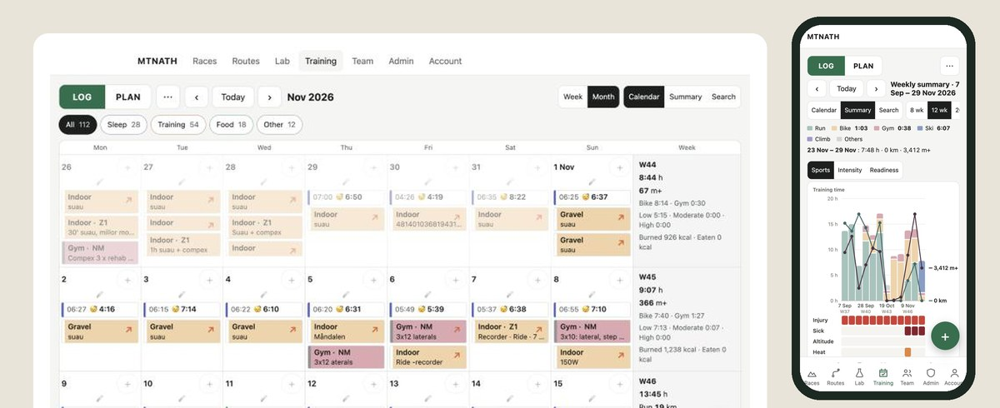
Colours and emojis on the cards
Training cards are coloured so a week reads at a glance. The cell colour is the sport, the band on the left is the focus of the session, and some focuses add an emoji.
| Cell colour (sport) | |
|---|---|
| Run | green |
| Bike | yellow |
| Ski | light blue |
| Gym | pink |
| Climb | lilac |
| Other sports | grey |
| Left band (focus) | |
|---|---|
| Race, PB or Project | black (always the first band) |
| Heat | orange |
| O2 | blue |
| NM | grey |
| Long | green |
| Tempo | pink |
| Threshold | red |
| VO2max | dark red |
| Lac | maroon |
| RS | purple |
| No focus | white |
A card shows up to two bands: a session with Threshold + PB gets a black and a red band. With more than two focuses, the first two in the order above are shown. Tech has no colour.
Emojis: 🏁 Race, ⚡ PB, ⛰️ Project, ⚠️ CloseCall. They show on the card next to the focus name. The card title is the focus (e.g. Threshold, PB), with the sport in small letters beside it; without a focus, the title is the sport.
Set the focus in a Training entry with the Focus chips (NM, Long, Tempo, Threshold, VO2max, Lac, RS, Race, Heat, O2, Tech, Project, PB, CloseCall); you can pick several.
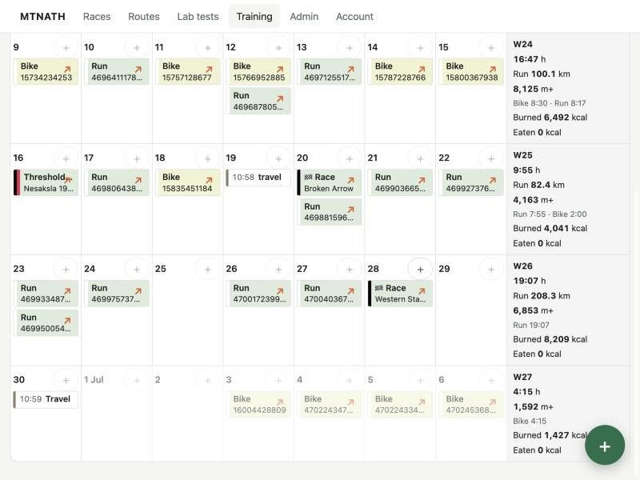
Search and filter
Tap Search (next to Calendar and Summary) to look through the whole log, every year:
Type words in Search the descriptions and notes….
Filter with the chips: Type (Sleep, Training, Food, Other), Sport (Run, Bike, Gym, Ski, Climb, Others) and Focus (NM … CloseCall). Chips in the same row add up: Race + PB lists all races and all PBs. Use rows and words together, e.g. Focus Race + Sport Ski for your ski races.
The count ("40 cards found") and Clear sit under the chips. The results table has Date, Time, Type, Focus, Sport, Description and Duration, with ↗ to the activity. Tap a row to open and edit the entry.
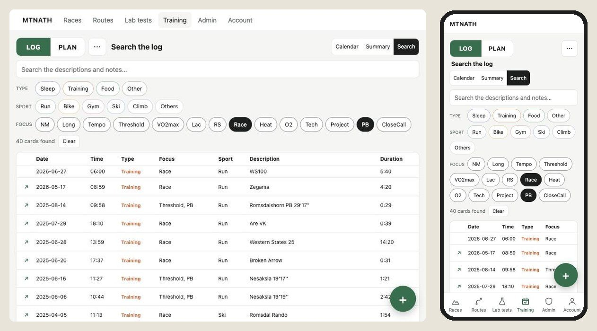
The ⋯ menu
Export this period (CSV) / Export everything (CSV).
💊 My supplements & medication: your list of supplements and medication (see Supplements & medication below).
Import activity files (.fit, .csv)… — choose one or several files from the same session; they are merged into one activity, it creates a training card and open in the Visualizer (section 9).
Hide empty columns in list.
Share with coach…: the coach link. It is now set up in Account → Share with coach, where you tick what the coach can edit or see. Details in section 12.
Importing activity files (.fit, .csv)
There are three ways in:
Training → ⋯ → Import activity files (.fit, .csv)… — the app finds where each file belongs by its time.
From a card: open a Training card in the log, tap + DATA, then Import .fit or .csv…. Files of that card's day are linked to that card; files of another day are imported as usual.
From a connected wearable: It automatically creates a card with the data. You can add more data and details in the card, merge other .fit or .csv files into it.
What happens to the files:
Read. Only .fit and .csv are accepted, up to 50 MB each. A .csv with elapsed time only asks when it started. The same file imported twice is recognised (by its content) and skipped.
Grouped. Files whose times overlap are one session (watch + muscle-oxygen sensors + Tymewear…) and are merged into one activity, lined up by clock time.
Merged with what is already there. If an activity already covers that time (e.g. COROS synced it, or the Recorder saved it), the new files are added to it instead of creating a second one. If every file is already in it, the result is "already imported".
Matched to a card. If the activity has no Training card yet, the app looks for one you wrote yourself within a day of it that has no file yet. A card matches when its time window overlaps the activity or starts within 15 minutes of it. The card's window is its start and end, or its start + the time you entered, or 30 min after its last DATA point, or 12 hours if nothing else is known.
One match: the file is attached to that card. What you typed on the card is kept; the file only fills empty fields (time, distance, D+, kcal…). The card's sport is applied to the activity.
Several matches: the app asks which card to attach it to.
No match: a new Training card is created.
Undo. After attaching to an existing card, the message has an Undo button that gives the file its own card again.
The import message sums it up, e.g. "Imported: attached to Training · 2026-11-04 11:08, 1 added to an activity already there". Tap ↗ on the card to open the result in the Visualizer.
Log something
Tap the round + button (bottom right). The time is set to now; change it if needed.
Pick Sleep, Training, Food or Other; you can switch between them at the top of the form.
Fill what you want and tap Save. Every field is optional.
| Entry | Fields |
|---|---|
| Sleep | Sleep time; muscle fatigue, energy, motivation and trust (1–5 each; trust is how much you trust yourself and the process); sick; injuries (a check-in for each open injury: pain 0–10, As planned / Adjusted / Stopped, treatment, or + New injury) |
| Training | Focus (NM, Long, Tempo, Threshold, VO2max, Lac, RS, Race, Heat, O2, Tech, Project, PB, CloseCall), sport, terrain, description, activity link, time, distance, D+, feel (1–5), kcal burned |
| Food | Description, kcal, carbs, protein, fat, fibre |
| Other | Free notes |
| Also on every entry | Environment (altitude and time at altitude, temperature and time in heat); poop & pee (Bristol stool chart, urine color); data (weight, fat %, HR, HRV, Lactate, sO2, RPE, Tº, supplement / medication, custom data, etc.); notes |
Sick days and injuries are logged only in the Sleep card, once a day. Injuries are also followed in the 🩹 injury cards on each day of the calendar (hover one to see the open injuries). Both show each open injury with Pain today, how training went and the treatment; Resolved today closes it and + New injury adds one. The full history is in Lab → Injuries (section 4).
Supplements & medication
Open ⋯ → 💊 My supplements & medication to keep your list. + Add asks for the name, Supplement or Medication, dose and unit (mg, µg, g, IU, ml, tablet, capsule, drops), With food, Daily until stopped (with From and Until; empty = still taking it) and a note.
Daily ones count as taken every day from their start date until you stop them.
Others are logged when you take them: + DATA → Supplement / medication. Your list shows as quick chips, and ↻ Repeat yesterday's supplements logs yesterday's set in one tap.
Days with supplements show 💊 in the calendar; hover it to see what was taken.
Private: admins cannot see them; your coach only when you share them.
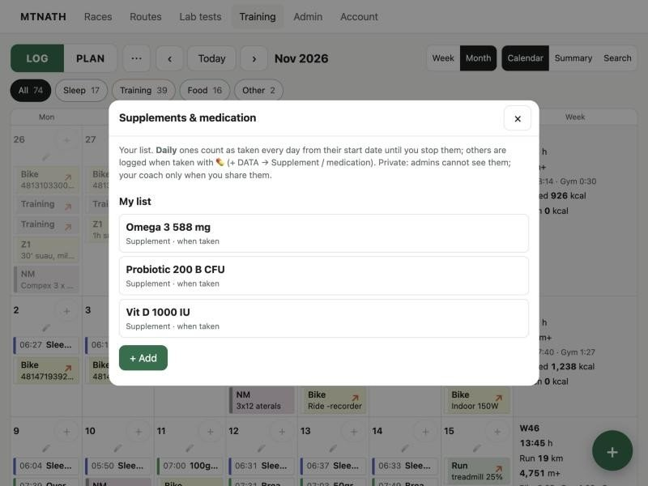
Logging Food and Hydration:
Logging water
The Food card has a Water field to log how much you drink through the day. Tap 🥛 Glass to add 250 ml or 💧 500 ml to add 500 ml; each tap adds to what is there (Glass + 500 ml + Glass = 1,000 ml), or type the ml yourself. Log water on its own (a Food card with only water) or together with a meal; the water of all entries of a day adds up to your daily intake, shown on each day in the Calendar → Week view.
Estimating food with Claude (text or photo)
Instead of typing calories and macros, let Claude estimate them:
In the Food card, describe what you ate in Description (any language, with amounts if you know them: "2 slices rye bread with brown cheese, 2 eggs, coffee with milk"), or tap the camera button (Take or choose a photo) to photograph the plate. With a photo the description is optional and adds context ("I ate half the rice").
Tap Estimate with Claude. Claude fills cal, cho, prot, fat and fib.
Check the result: each filled field shows est. until you change it; Details lists each item with the portion assumed and its values, and the notes on what was assumed. A vague description gets "Rough estimate — add amounts for a better one". Undo puts back what was there before.
Correct any field by hand, or change the description and tap Estimate again, then Save.
Good to know:
Products in your Product library (gels, drink mixes, bars) are counted with their label values.
If you had already typed values, the app asks whether to replace them or only fill the empty fields.
With a photo and an empty description, the description is filled with the items found, so the log stays searchable.
Photos are never saved: the location data is removed on your phone before sending, the photo is used for the estimate only, and only the numbers and item list are stored. Only the description, photo and matching product names are sent — nothing else about you.
It needs a connection, and there is a daily number of estimates per member. The first time, the app asks you to confirm that the description or photo is sent to Claude (Anthropic).
Adding DATA points to a session (lactate, weight…)
DATA points are measurements taken at a moment of a session: a lactate during intervals, weight before and after, a glucose reading. They are stored with the session, each with its own time.
You can log:
To log during the session: Before starting the session, create a card, add the data from before the session you want, (weight, HR, arterial pressure...) and save the activity. Then during the activity, click + DATA and add the values you want. If you're offline when adding data it will be saved in the device until you get connection. After finishing the activity, add the .fit of the activity (same way, using the + DATA button) or it gets synchronized with your wearable.
To log after the session: Once your session is finished, add a .fit or if you have a wearable connected it will synchronize automatically. Then open the card and add the data you want.
How to Log extra Data:
Open the Training card and tap + DATA (also shown on the card in the calendar week view).
Pick the type: Lactate, Weight, SpO2, Glucose, Ketones, RPE, Core temperature or Custom (your own label, for example time in a transition, pH, intake of substrate…). The unit fills in (e.g. mmol/L for lactate); change it if needed.
Type the value and set the time:
Now — for readings taken live during the session (works offline: saved on the device and sent when you are online again).
From start — elapsed time, e.g. 1:05:30.
Clock time — the time of day.
After the session (post) — for post-session readings.
Add a note if useful and tap Add. Repeat for each reading.
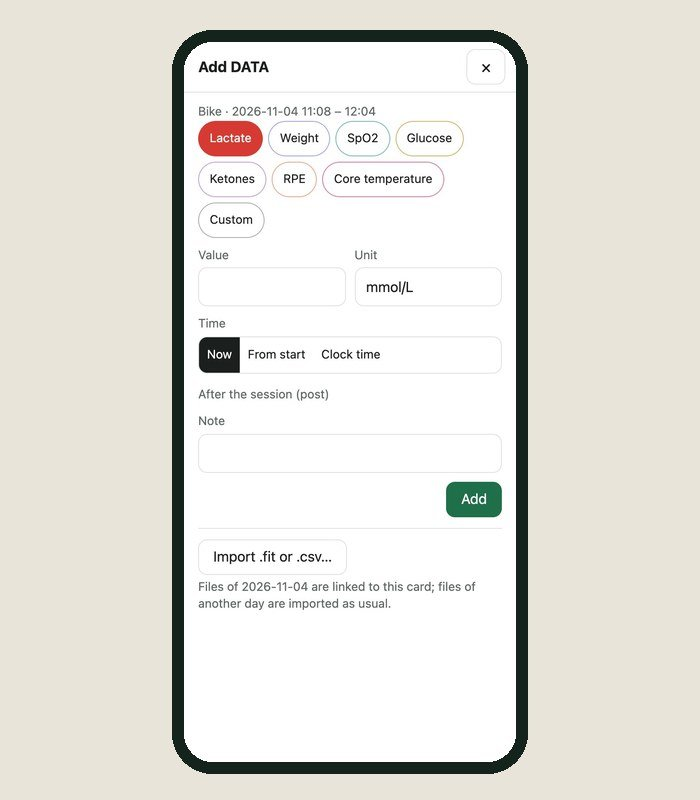
How DATA points show in the Visualizer. Open the session in the Visualizer (↗ on the card): below the activity's graphs there is one row per DATA type (e.g. DATA · Lactate, DATA · or a Custom label), with the number of entries. Each reading is a chip placed at its time, so you can see it against speed, heart rate, altitude and cadence at that moment; moving over the graphs reads them all at the same time. Tick Lactate on the heart-rate graph to draw the lactate values on the heart-rate graph as well, joined by a dashed line, with their scale (mmol/L) on the left.
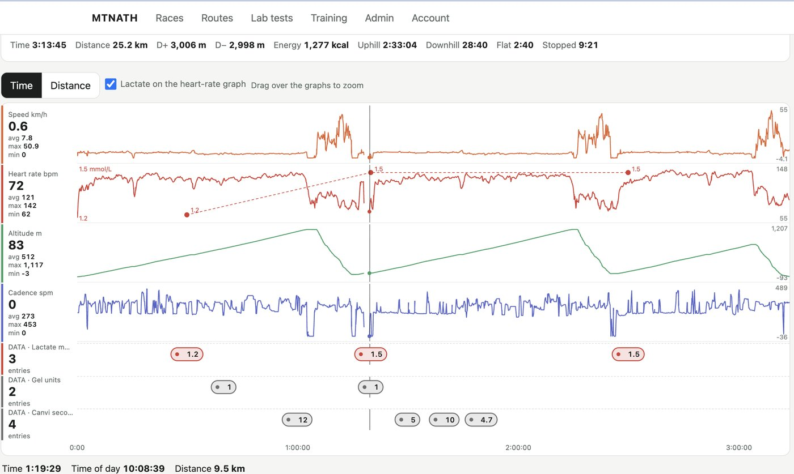
The card then shows the Entries (tap one to edit or delete it) and a Time line with the session span and every reading on it. With weight before and after, the card shows the change; above 4% of body weight it is flagged as the race planner's health-risk limit. When files are merged into a session later, its DATA points move with it.
The data points are also shown in the visualiser under the graphs with continuous data.
Time in zones
In Summary, the rows Z1–Z5 show the hours spent in each heart-rate zone per week. They are counted from the heart rate in your activity files (second by second), not from the zone you wrote on a card.
The zone limits come from:
Your latest Test 1 / 1b in Lab, if you have one.
Otherwise the HR column of the zones in your profile (Lab → My profile → Zones).
The line under the chart says which source is used and the limits, e.g. "zones from My profile (Z1 < 120, Z2 120–145, Z3 145–160, Z4 160–175, Z5 ≥ 175 bpm)". To change them, do a new test or edit the HR column there; save the race profile as your default so it is the one used.
Performance curve and best efforts
At the bottom of Summary, the performance curve shows your best for every duration from 5 seconds to 10 hours (5″, 15″, 60″, 2′, 5′, 10′, 20′, 30′, 1 h, 2 h, 3 h, 4 h, 6 h, 10 h) over a period, and Best efforts lists your fastest benchmark efforts. Move over (or touch) the curve to read each value; the date under a best opens that activity.
Choose the sport and the measure:
| Sport | Measure | What "best" means for each duration |
|---|---|---|
| Bike | Power | Highest average power (W) |
| Run | GAP (all) | Fastest average grade-adjusted pace: speed on every second × the GAP factor of its gradient (from the file's grade, or from altitude over at least 20 m; gradient limited to ±45%, speed to 30 km/h). For durations up to 2 min, stretches that run downhill are left out. |
| Run | Uphill GAP | The same, but only on stretches that climb throughout (at least 90% of the time on an uphill gradient) — your climbing ability |
| Run | Pace | Fastest real average pace, gradient ignored |
| Ski | Vertical speed | Highest climbing rate (m/h). For durations over 30 min only real climbs are counted (sections steeper than 3% for at least 10 min), so stops at the top don't spoil it. |
| Best effort | Sport | How it is found |
|---|---|---|
| 1 km, 5 km, 10 km | Run | Fastest time to cover that distance anywhere in an activity |
| 500 m+, 1000 m+ | Run, Ski | Fastest time to climb that height, shown with the climbing rate (m/h) |
| 20′ and 60′ power | Bike | Highest average power over 20 and 60 minutes |
Before it is used, altitude is cleaned: impossible jumps (GPS or barometer spikes) are ignored and it is smoothed over 15 seconds.
Leave out an activity that spoils the curve. A ride in a car, a lift, a GPS jump or a mislabelled sport can create impossible bests. Open the activity in the Visualizer and tick Exclude from performance curve at the bottom. It disappears from the curve and best efforts; the log, the totals and time in zones still count it. Untick to bring it back. Changing a card's sport (e.g. Run to Bike) recalculates the activity's curve for the new sport.
Compare months and years. The first line sets the period: 30 days (the last 30 days), Month or Year; with Month or Year, ‹ › move to the previous or next one. Tap + Compare another period to add a second line in another colour (e.g. this month against September, or 2026 against 2025); add more the same way, and × removes one. Each line shows how many activities it counts. Best efforts gets one column per period, so you can see where you are faster or slower.
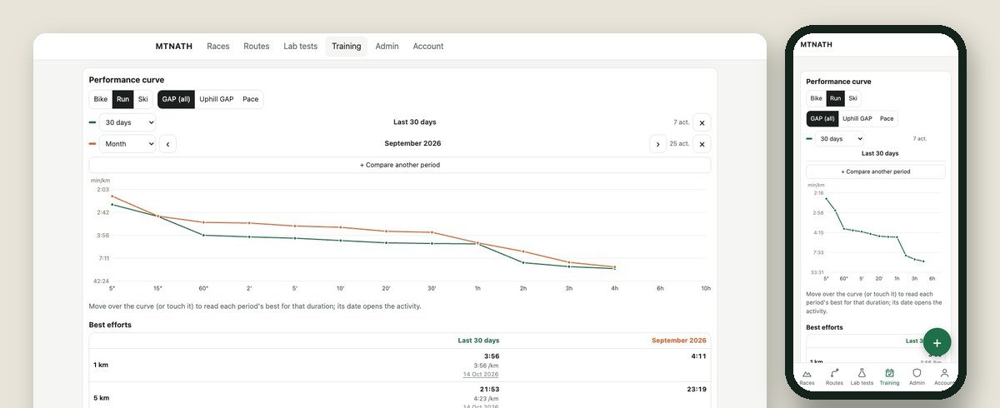
8. Training plan
The Training plan is where you (or your coach) lay out the season and the sessions of each week, and see them next to what you actually logged. Open Training and tap PLAN.
Season view
Tap Season to see the whole season, one column per week (26, 52 or 78 weeks).
Races from the race planner appear on their own; each week shows how many weeks are left to the next race.
Period row: tap + to add a training period (e.g. Rehab, Aerobic base, Specific 1) with a description; tap a period to edit it.
Description, Hours, Distance, Heat, Altitude (O2), NM, Threshold rows hold the weekly targets; tap a week to set its races and goals.
+ Add row adds your own target row; tap its name to rename, recolour or delete it.
Calendar view
Week or Month, with ‹ Today ›.
Each day shows its planned sessions (start time, name). In week view, a day also shows what was logged (✓ Logged with time, km and kcal).
The week column shows the period, the goals button, planned hours, and in week view a table of Plan vs Log (hours, km, m+, kcal).
Copy week copies a week's sessions to another week.
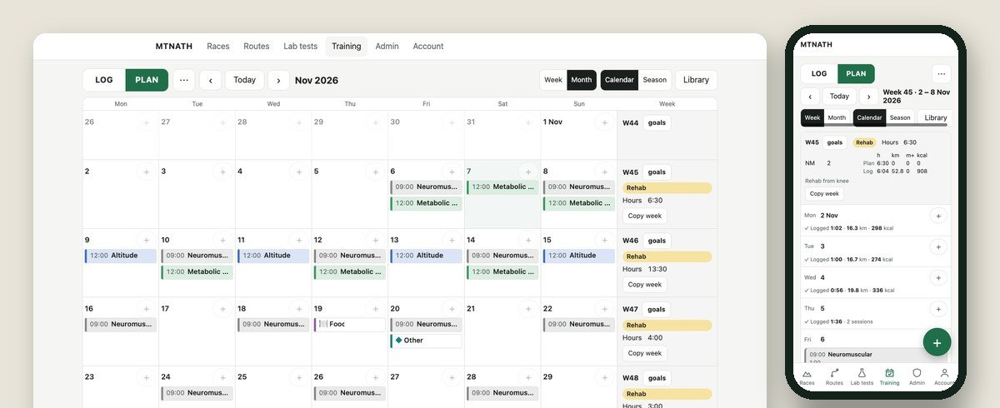
Done, partially or skipped
Every planned card (Training, Food or Other) shows in the calendar whether it was carried out, with the band on its left side:
| Left band | Meaning |
|---|---|
| White | No answer yet, today or a future day |
| Green | Done |
| Orange | Partially |
| Red | Skipped, or the day has passed without an answer |
Answer when you log. When you add a card in the LOG on a day that has a planned card of the same category (Training, Food or Other), the app asks Was this planned? with three buttons: Done, Partially, Skipped. One tap saves the answer and closes the sheet, and the planned card's band changes colour. If what you logged wasn't the planned session, close the sheet with × at the top without answering. The same question comes up when you import a .fit file that creates a new Training card on a day with a planned training.
Days that have passed. After 23:59, any planned card of that day still without an answer shows as Skipped (red). This is not saved: if you log yesterday's session today, the question still comes up, and your answer replaces the automatic Skipped. Planned cards from earlier weeks that were never answered also show red.
Change or undo it from the plan. Open the planned card in PLAN to see its result (an automatic one reads "Skipped: the day has passed without an answer") and change it to Done, Partially or Skipped at any time.
Add a session
Tap + on a day.
Choose Training, Food or Other.
Fill name, kind of session (Neuromuscular, Metabolic basic, Metabolic key, Altitude, Heat), sport (Run, Ski, Climb, Bike, Swim, Gym), intensity (Z1–Z5), start time, duration, distance, elevation, calories, description and key metrics to watch.
Tick Add to library to reuse it, then Save.
Library
Library opens your saved sessions grouped by kind (Neuromuscular, Metabolic basic, Metabolic key, Altitude, Heat). Drag a session onto a day, or tap it, to add it to the plan; × removes it from the library.
9. Visualizer — merge and read activity files
The Visualizer shows one activity with every signal from every device stacked on one timeline: watch, power meter, muscle-oxygen sensors, Tymewear, Recorder sessions. Each brand's app only shows its own sensor; here they line up.
Bring an activity in
In Training → ⋯ → Import activity files (.fit, .csv)…, choose all the files from one session at once (e.g. the watch .fit plus two muscle-oxygen sensor .fit files). Only .fit and .csv are accepted; a file with elapsed time only asks when it started.
The files are lined up by clock time and merged into one activity, saved with a Training log card.
Open it any time from the card's link ↗ in the Training log. Recorder sessions open the same way.
Read the graphs
The header shows date, start time, duration, distance, sport and the files merged; Whole activity gives time, distance, work (kJ) and stopped time.
Pick Time or Distance for the horizontal axis.
Each graph shows its current, average, max and min value. Move over (or touch) the graphs to read every value at that moment; drag across a graph to zoom in.
If you have added data (lactate, weight…) it’s shown under the graph at the timeline ( lactate can be shown also with heart rate curve)
If the activity was outside and has gps data it shows the map.
Under Graphs, switch signals on or off (up to 10 at once). Signals from extra devices are named after the device, e.g. Heart rate · sensor_1_Right RF Quad. Available signals include speed, heart rate, power, cadence, altitude, grade, vertical speed, vertical oscillation, ground contact, step length, breathing rate, SmO2, tHb, core temperature, pace, breath rate, tidal volume, minute volume, VE zone and more.
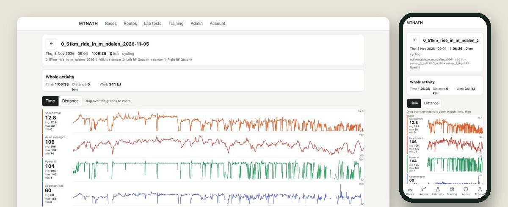
Actions
Download GPX — when the activity has GPS, the track with altitude, heart rate, cadence and power.
Download .fit — one merged .fit file of the whole activity.
Export to test — turn the activity into a lab test: Keep as FREE test, Use as Test 1, Use as Test 1b, Use as Test 2 (opens that test with the activity's data), or Training log only.
Delete — remove the activity.
Exclude from performance curve — leave the activity out of the curve and best efforts (section 7).
To put it next to other sessions, use Compare (section 6).
10. Account and connections
Account holds your profile, the tools you see, and the wearables that feed your Training log.
Profile and My tools
Your email and role are shown at the top. Type your Name and tap Save name.
My tools: tick the tools you want in the menu (Races, Routes, Tests, Training; keep at least one), choose Open the app on, and tap Save my tools. If the start tool is turned off, the app opens on the first tool shown.
Sign out is at the bottom.
Connections (Account → Connections ›)
| Service | What comes in | When it syncs |
|---|---|---|
| COROS (official COROS MCP) | Activities (start time, sport, duration, distance, elevation gain) and daily health (sleep time, resting HR, nightly HRV) | Every night (last 7 days) and on Sync now |
| Withings | Weight | On every weigh-in, plus every night as a fallback |
In the Training log, activities appear as Training cards (with a link to the activity), nights as Sleep cards, and weigh-ins as Other cards; the weekly summary charts them.
For each connection you can:
Sync now to pull the latest data.
See when it last synced and when you gave consent.
Download what the last sync sent (your own data, no passwords) if the numbers look wrong.
Disconnect to stop syncing and keep what was synced; tick Also remove the cards it added to my Training log to clear those too.
Disconnect and delete synced data to stop syncing and delete what the service sent.
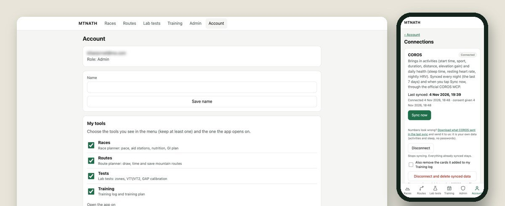
Share with coach. Make the coach link and tick what it opens (edit or see), in Account. Details in section 12.
Food estimates and Blood tests. Account has the switches for the Claude features: Show "Estimate with Claude" in Food, Read lab reports with Claude, and Show blood tests in my training log (the 🩸 on the day of each test). Tap Save after changing them.
Claude connector: analyse your data with Claude
Add MTNATH to your own Claude (claude.ai, the desktop app or the phone app) and ask questions across all your tools in plain words, e.g. "Am I on track for my next race?", "How did my time in Z2 change since my last lab test?", "Is my fuelling plan right for the climbs?". Claude reads your data and explains it; the numbers (zones, GAP, gut load, summaries) come from the app's own calculations. Claude only reads: it cannot change or delete anything. It runs on your own Claude account.
Connect it (once).
In MTNATH, open Account → Claude connector › and tap Copy next to the Connector URL.
In Claude: Settings → Connectors → Add custom connector. Name it MTNATH, paste the URL and tap Add.
Tap Connect, sign in with your MTNATH account and tap Allow.
In a chat, turn MTNATH on in the tools menu and ask away.
What Claude can read.
| Area | Data |
|---|---|
| My profile | Body, zones, thresholds, fuelling and hydration settings, product library |
| Races | Race plans: pacing, aid stations, fuelling, GI plan, finish estimate |
| Routes | Saved routes, their plan and marks |
| Tests | Lab tests and their results, blood tests |
| Training | Log, weekly summary, plan, season, activities, performance curve, sleep, HRV and weight, supplements & medication, injuries |
Tools you turned off in My tools are hidden from Claude too. Under Connected apps you see Claude and the date it was connected; Disconnect removes its access at once.
Good questions to try. "Give me an overview of my last 4 weeks", "Compare last week with the plan", "What changed between my last two lab tests?", "Which section of my race is riskiest for my gut?", "How is my HRV responding to this block?", "What is my best uphill GAP this month compared with September?", "How has my ferritin changed, and what was my training and supplementation around each test?", "How did my knee pain follow my training load?". Claude can combine tools in one answer (e.g. the season, the race plan and recent training; blood tests, supplements and food; injuries and training load).
12. Sharing with a coach
One coach link gives your coach access without an account or login. Set it up in Account → Share with coach:
Tick what the link opens. Each line says whether the coach can Edit it (change it) or only See it (view only); untick a line to keep it private.
Copy the Coach link and send it to your coach.
Change the ticks at any time; the same link then opens more or less.
| Tick | Coach can | What it opens |
|---|---|---|
| Training | Edit | Edit the plan, season and library of sessions; see the log, its cards, the weekly summary and the Visualizer |
| Races | Edit | Edit your races in the race planner |
| Lab tests | See | Test 1, 1b and 2 with their results (zones, VT1 / VT2, GAP) |
| Blood tests | See | Every blood test and its values |
| My profile | See | Body, zones, thresholds, GAP, gut, hydration and altitude numbers |
| Supplements & medication | See | Your list and the doses, shown in the Training log (tick Training too) |
| Injuries | See | Injuries, check-ins and the 🩹 lines in the log |
| Risk and behavior | See | Your close calls and dangerous situations |
| Compare activities | Edit | Open, make and save comparisons of your activities |
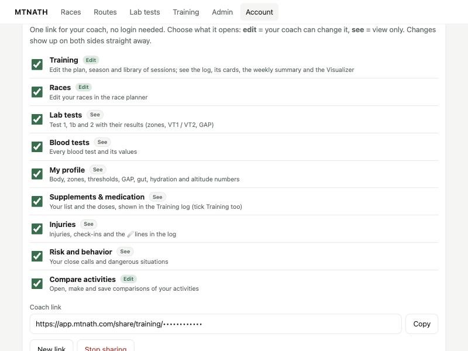
Changes show on both sides straight away: what the coach plans appears in your plan, and what you log appears in their view.
Anyone who has the link can use it as ticked, so send it only to your coach.
New link makes the old link stop working (use it if the link was shared further). Stop sharing turns access off completely.
To show a single race to someone else read-only, use Create share link in that race's ⋯ menu instead (section 2).